Transforming data into insights and ideas into digital solutions. I blend engineering precision with creative development, specializing in data science, machine learning, and full-stack development.
As an Energy Engineer pursuing a Master's in Data Science, Big Data, and Business Analytics, I bring a unique perspective to problem-solving. My journey spans from renewable energy systems to building scalable web applications and developing machine learning models.
I'm passionate about the intersection of data science and sustainable technology.
Currently, I work with cutting-edge technologies like Snowflake, Spark, Databricks, and TensorFlow while maintaining my love for full-stack development with Go, SvelteKit and Python.
Master's in Data Science & Business Analytics
Full Stack Development, Energy Engineering & Data Science
Building new things
A comprehensive portfolio showcasing my work across data science, full-stack development, and client solutions
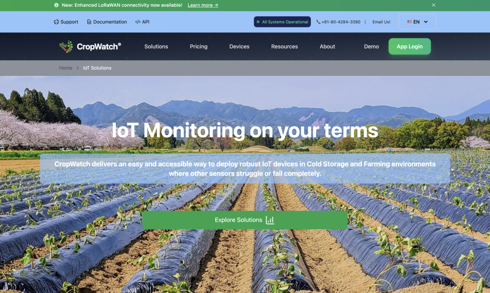
Redesigned the entire UX for a Japan-based agronomy IoT startup. Developed intuitive interfaces for sensor data visualization, real-time monitoring dashboards, and alert systems. Collaborated with the engineering team to present complex agricultural data in an accessible manner.
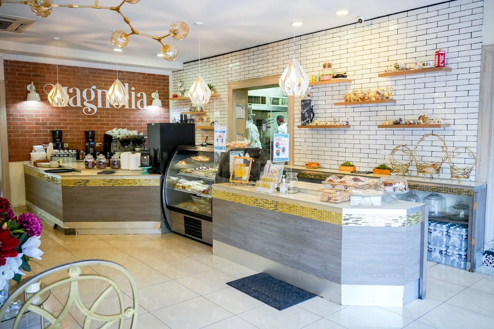
Comprehensive data analysis project for Magnolia Restaurant in Tegucigalpa. Built interactive Tableau dashboards to track sales trends, customer preferences, and operational efficiency. Provided actionable insights that improved inventory management and menu optimization.
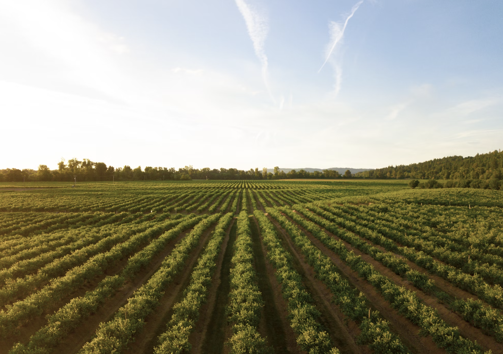
Data-driven analysis for a sweet potato production company. Developed Tableau dashboards monitoring chemical usage, soil health metrics, and crop yield predictions. Implemented data mining techniques to optimize agricultural practices and reduce chemical dependency.
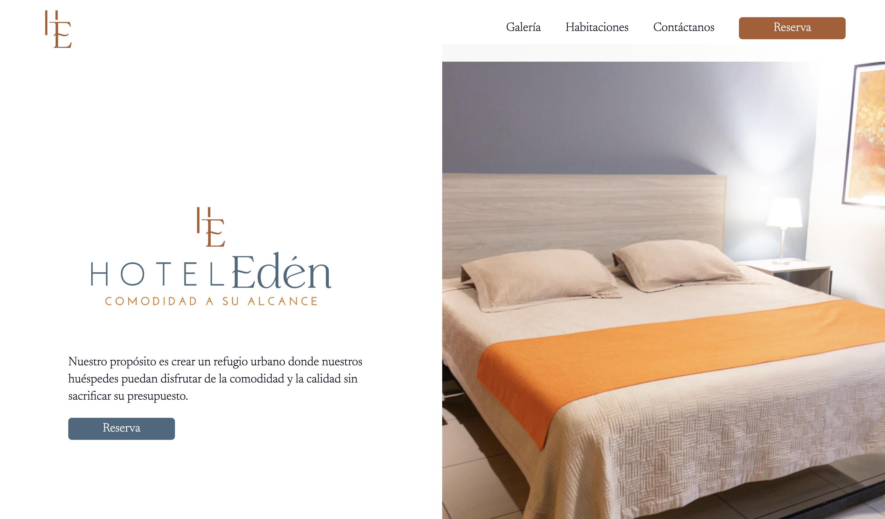
Operations and finance management platform for Hotel Edén in Tegucigalpa. Features intelligent room availability system, booking management, and role-based access control. User-friendly interface prevents booking errors and provides real-time room status updates for staff.
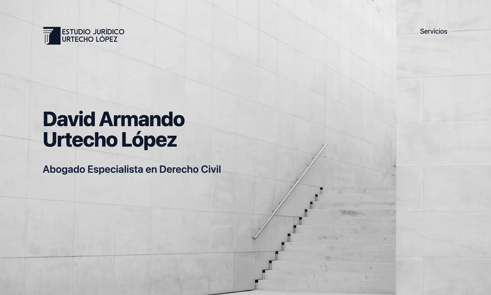
Professional website showcasing comprehensive legal services for Urtecho López Law Firm. Modern design with visually appealing elements, optimized for seamless navigation. Features legal consultations, litigation support, corporate advisory services with high usability and full responsiveness.
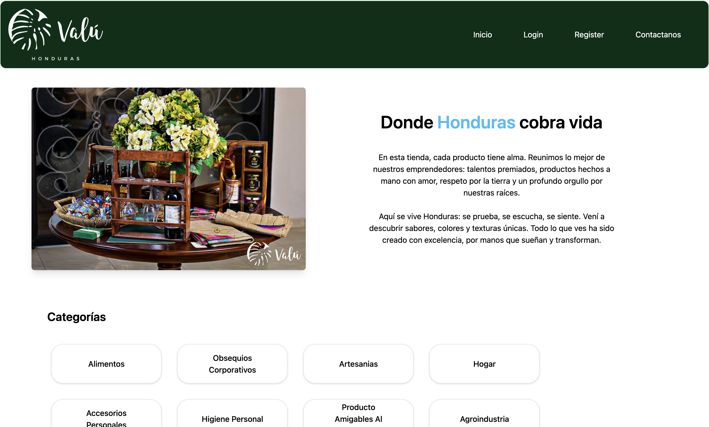
E-commerce solution for one of my first clients. Built a complete online store using WordPress and WooCommerce, featuring product catalog, shopping cart, payment integration, and order management system.
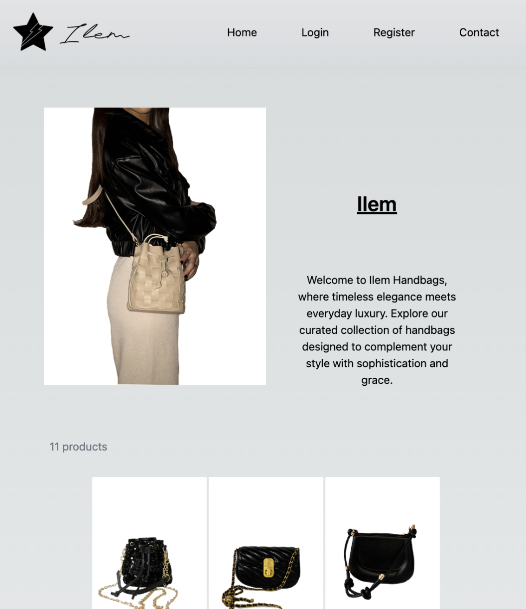
E-commerce platform for a Tegucigalpa-based handbag company. Features comprehensive administrative panel with inventory management, order processing, and customer management. Built with modern e-commerce best practices including secure payments and responsive design.
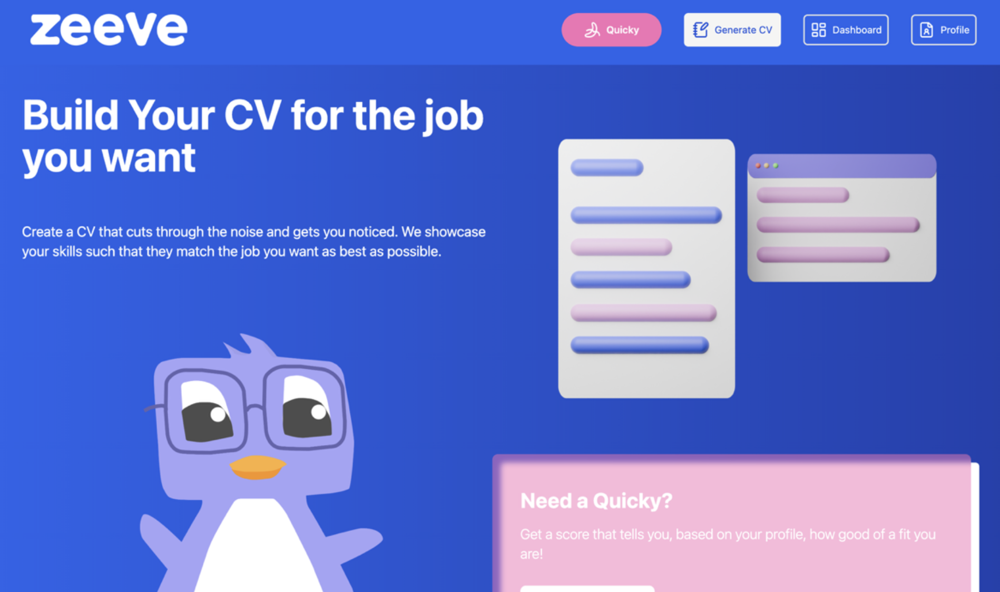
AI-powered platform generating optimized CVs based on user profiles and target job positions. Leverages artificial intelligence to craft effective resumes and evaluates candidate suitability for desired positions. Currently in testing phase with advanced matching algorithms.
Full-stack SaaS platform enabling businesses to create dynamic online stores. Built with SvelteKit frontend and Go backend, featuring multi-tier subscription models. Implemented real-time menu updates, order management, and customer analytics.
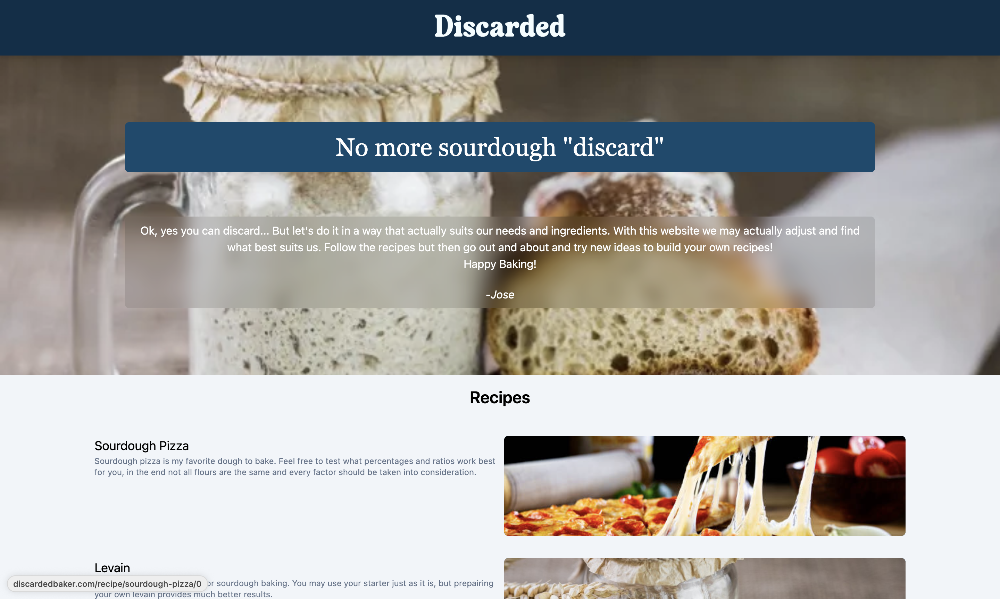
Web platform for generating sourdough bread recipes with intelligent discard management. Automates calculations for hydration, flour ratios, and ingredient adjustments. Delivers quick, accurate results for recipe modifications and experimental baking variations.
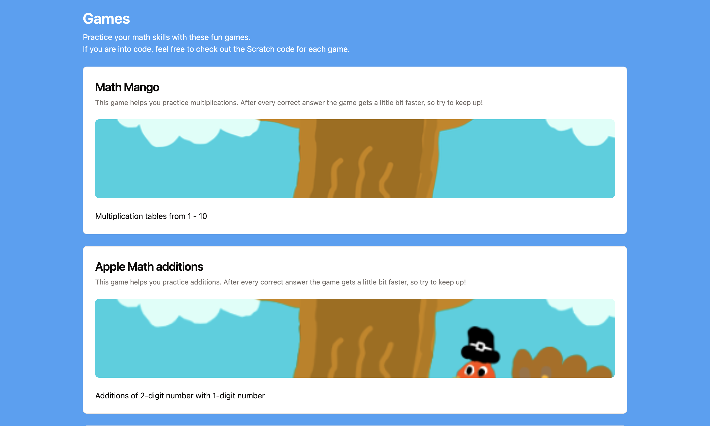
Educational platform hosting mathematics-focused games for children. Features topic explanations, examples, and practice exercises with child-friendly design. Optimized for tablets and laptops, prioritizing ease of use for young learners accessing the application.
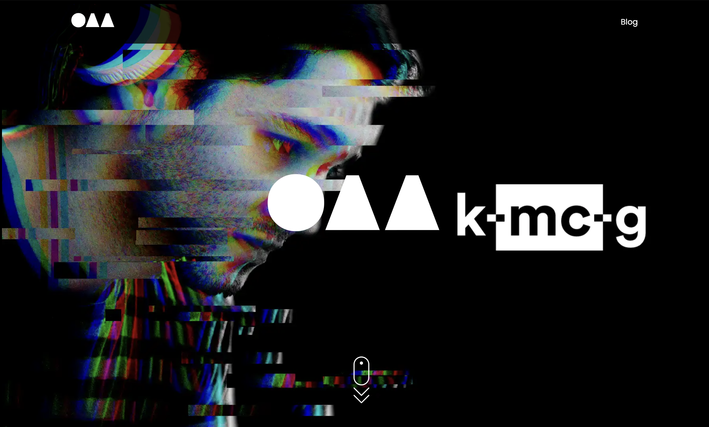
Personal brand website for my DJ and music production alter ego. Clean, modern design showcasing music releases, mixes, and event schedule. Built with SvelteKit for optimal performance and seamless user experience.
Modern health monitoring application for tracking vital signs including blood sugar, blood pressure, and oxygen saturation. Featured secure data sharing with healthcare providers and family members. Built with Python/Flask backend and responsive frontend.
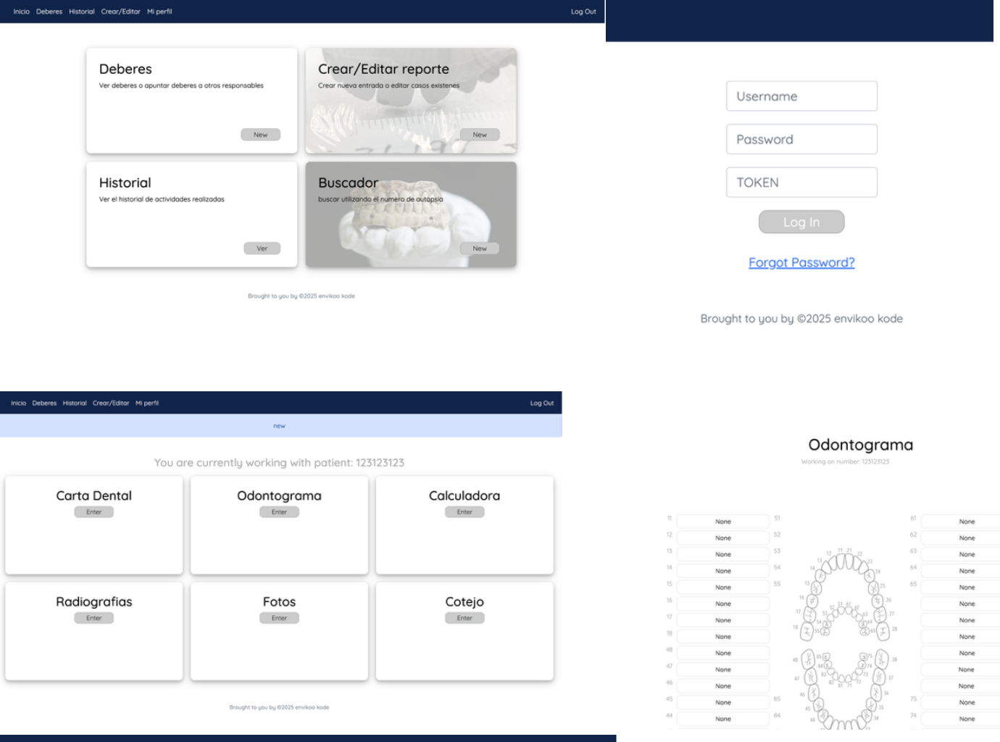
Application developed for the morgue in Tegucigalpa to digitalize forensic odontological reports. Features dual password security system, comprehensive activity history logging, and restricted sections for authorized personnel ensuring data integrity and forensic protocol compliance.
My own portfolio website showcasing projects, skills, and experience. Built with modern web technologies focusing on clean design, smooth animations, and optimal performance. Features responsive design and interactive elements.
Series of web development projects completed during university coursework. Includes dynamic websites, database-driven applications, and interactive user interfaces demonstrating fundamental web development skills.
I'm always open to discussing new projects, creative ideas, or opportunities to be part of your vision.